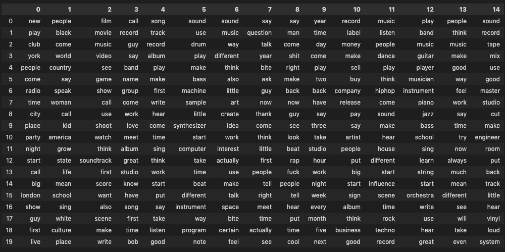
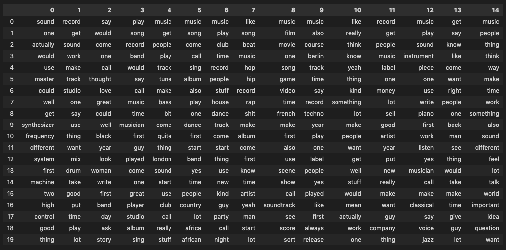
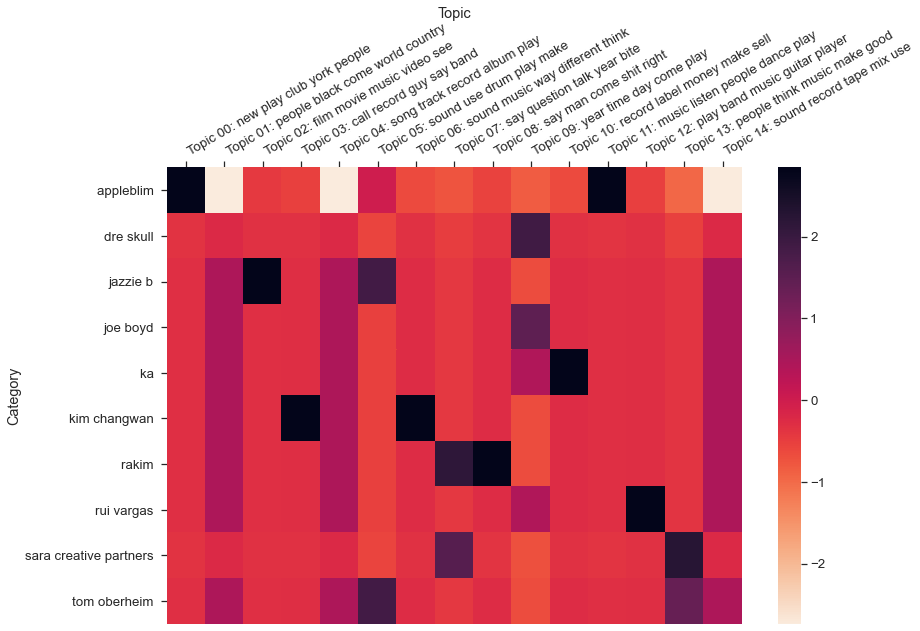
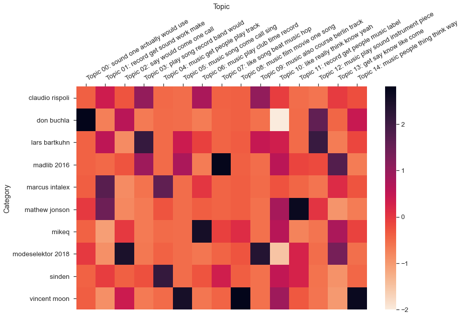

Part 6 Topic Modeling
For the last step of this project I wanted to attempt some basic text mining in the form of topic modeling, to see if the results would align with the analysis and my knowledge of the corpus. As with the rest of the project I decided to undertake this in both R and Python for learning and comparison purposes.
In R I used the stm (Roberts, Stewart, and Tingley 2020) and topicmodels (Grün and Hornik 2021) packages. In Python I used the MALLET Java package18 via the Little Mallet Wrapper library19, based on Melanie Walsh’s tutorial in Introduction to Cultural Analytics & Python20). In every case, topic modeling was done using the Latent Dirichlet Analysis (LDA) algorithm.
I also spent some time looking into the Latent Semantic Analysis (LSA) algorithm, which is possible using stm, but this proved somewhat more complicated than I had time for. With Python, I also did some tests using the gensim library21 but the tuning required to achieve useful results was more involving than MALLET.
I ran the topic models on both cleaned versions as the raw version is too noisy to be meaningful.
6.1 Topic Modeling in R
To start with I created Document-Feature Matrixes from the quanteda versions of the corpus, trimming out words that appear less than 7.5% and more than 90% of the time. In my first attempts I’d set the trim theshold to ignore term frequency below 2000 but that proved too drastic resulting in topics that were a lot like the main themes I discovered in the exploratory analsysis.22
library(quanteda)
library(tm)
r_corpus<- VCorpus(DirSource("FILES/RBMA_CLEAN_R_LEMM_V2")); py_corpus<- VCorpus(DirSource("FILES/RBMA_CLEAN_PY_LEMM_V2_POS")); r_corpus_q<- corpus(r_corpus); py_corpus_q<- corpus(py_corpus); docnames(r_corpus_q)<- docvars(r_corpus_q, "id"); docnames(py_corpus_q)<- docvars(py_corpus_q, "id")
r_dfm<- tokens(r_corpus_q); r_dfm<- dfm(r_dfm); py_dfm<- tokens(py_corpus_q); py_dfm<- dfm(py_dfm)
r_dfm<- dfm_trim(r_dfm, min_docfreq = 0.075, max_docfreq = 0.90, docfreq_type = "prop"); py_dfm<- dfm_trim(py_dfm, min_docfreq = 0.075, max_docfreq = 0.90, docfreq_type = "prop")
r_dfm; py_dfm## Document-feature matrix of: 468 documents, 2,700 features (73.89% sparse) and 7 docvars.
## features
## docs hello turn lecture present job easy run spend hour
## a-guy-called-gerald.txt 2 1 2 1 2 4 5 1 3
## addison-groove.txt 4 6 2 0 4 0 0 6 8
## aisha-devi.txt 1 1 1 0 0 1 1 1 6
## alec-empire.txt 1 4 0 2 2 4 3 0 7
## alex-barck.txt 0 1 0 0 0 11 4 0 1
## alex-rosner.txt 0 2 2 0 4 3 0 0 2
## features
## docs sheet
## a-guy-called-gerald.txt 1
## addison-groove.txt 0
## aisha-devi.txt 0
## alec-empire.txt 0
## alex-barck.txt 0
## alex-rosner.txt 0
## [ reached max_ndoc ... 462 more documents, reached max_nfeat ... 2,690 more features ]## Document-feature matrix of: 468 documents, 2,858 features (74.00% sparse) and 7 docvars.
## features
## docs hello thank turn lecture present job easy ran spent
## a-guy-called-gerald.txt 2 5 1 2 1 2 4 1 1
## addison-groove.txt 1 2 6 2 0 4 0 0 2
## aisha-devi.txt 0 5 1 1 0 0 1 0 1
## alec-empire.txt 0 0 4 0 2 2 4 1 0
## alex-barck.txt 0 4 1 0 0 0 11 0 0
## alex-rosner.txt 0 0 2 2 0 4 3 0 0
## features
## docs hour
## a-guy-called-gerald.txt 3
## addison-groove.txt 8
## aisha-devi.txt 6
## alec-empire.txt 7
## alex-barck.txt 1
## alex-rosner.txt 2
## [ reached max_ndoc ... 462 more documents, reached max_nfeat ... 2,848 more features ]6.1.1 Topic Modeling with topicmodels
Next I set a topic count of 15, converted the DFM to the topicmodels format and then used that to calculate the LDA models.
library(topicmodels)
topic.count <- 15
dfm2topicmodels <- convert(r_dfm, to = "topicmodels")
lda.model <- LDA(dfm2topicmodels, topic.count)#same with python corpus
dfm2topicmodels_py<- convert(py_dfm, to = "topicmodels")
lda.model_py<- LDA(dfm2topicmodels_py, topic.count)I then displayed the resulting topics in a dataframe with the top 10 terms from each for ease of analysis.
as.data.frame(terms(lda.model, 10))## Topic 1 Topic 2 Topic 3 Topic 4 Topic 5 Topic 6 Topic 7 Topic 8
## 1 musician club everybody beat label create dj man
## 2 sing dj gonna drum tune art radio shit
## 3 jazz house man sample quite experience hiphop beat
## 4 country night kid cool bass write club rap
## 5 band dance cause hiphop london person york yo
## 6 young party cool dj release moment soul fuck
## 7 man detroit story pretty uk process disco everybody
## 8 dance techno school house obviously sense tape hiphop
## 9 african mix group definitely dubstep certain buy crazy
## 10 black scene black dance drum quite sell dude
## Topic 9 Topic 10 Topic 11 Topic 12 Topic 13 Topic 14 Topic 15
## 1 band synthesizer room sort course mix piece
## 2 sing machine write band yes master film
## 3 drum electronic sit label label engineer movie
## 4 guitar instrument producer fuck release cut write
## 5 write computer amaze pretty berlin vinyl instrument
## 6 musician build sing money band room piano
## 7 player note hit sell example bass yes
## 8 bass control turn film techno tape game
## 9 drummer basically vocal basically french cd composer
## 10 group tape god scene quite process scoreas.data.frame(terms(lda.model_py, 10))## Topic 1 Topic 2 Topic 3 Topic 4 Topic 5 Topic 6 Topic 7
## 1 synthesizer hop mix musician dj person bass
## 2 instrument beat master yes club woman tune
## 3 machine hip engineer sing dance thank dj
## 4 computer sample room band house write quite
## 5 note cool cut jazz party art london
## 6 drum rap tape country disco moment drum
## 7 electronic definitely bass american night voice sort
## 8 control pretty vinyl dance mix word uk
## 9 course producer cd group scene understand club
## 10 keyboard sort high young techno sing scene
## Topic 8 Topic 9 Topic 10 Topic 11 Topic 12 Topic 13 Topic 14 Topic 15
## 1 hip film piece man label band write cause
## 2 hop movie sort shit release man piano drum
## 3 dj band create beat sell musician string dj
## 4 everybody video quite fuck money drum band hour
## 5 rap sort interested everybody techno soul drum laugh
## 6 sample scene guess yo dj guitar sing gonna
## 7 radio course space rap certain group game machine
## 8 money write experience crazy quite everybody producer detroit
## 9 beat later instrument kid company james melody moment
## 10 gonna story sense somebody berlin knew player beatWe see some expected clustering:
- Topics 4 (R) and 7 (Python) clearly refer to mastering / engineering lectures.
- 5 and 9 (R) and 14 and 15 (Python) appear to lean heavily towards DJ culture, with the Python topics making more of historically important locations such as Chicago, Detroit, (New) York and London.
- 8 (R) and 6 (Python) instead hint at more traditional forms of music creation (band, instruments, writing, singing).
- 11 (R) and 3 (Python) seem to capture some of the hip-hop related vocabulary I mentioned in 4.2 but 2 and 15 (R) and 12 (Python) do a better job at summing up hip-hop practices.
- 14 (R) and 8 (Python) capture the essential connection between Berlin and Detroit within techno music.
- 7 (R) and 9 (Python) both seem to reflect on music and moving images with “film,” “video,”, and “movie,” which might be due to the presence in the corpus of lectures with movie directors and the increasingly prevalent industry practice of syncing music to images which became a more regular topic of conversation in the second decade of lectures.
- 3 (R) and 1 (Python) reflect electronic music practices and instruments.
- 13 (R) and 5 (Python) clearly seem to point towards the business sub-theme of the corpus, with references to “label”, “buy/sell,” and “release.”
Another way to view similarities between topics within the same model is to plot them using a dendogram, which shows clusters of similar topics as well as their distances/dissimilarity.
lda.similarity <- as.data.frame(lda.model@beta) %>%
scale() %>%
dist(method = "euclidean") %>%
hclust(method = "ward.D2")
par(mar = c(0, 4, 4, 2))
plot(lda.similarity,
main = "LDA topic similarity by features",
xlab = "",
sub = "")
In the R version, we can see that topics 3 (electronic music) and 5 (DJ culture) and 13 (business) appear most distant from the rest and that there are two major clusters: in the case of topics 1, 9, 11, 2, and 15 it seems logical to assume that this is due to how they relate to hip-hop and club cultures, while the second cluster is more diverse though within that topics 7, 10, 12, and 14 seem to be closely related via more abstract themes such as art, technology, and experimentation.
In the Python version, we again see the electronic music topic (1) as most distant alongside two of the hip-hop topics (2, 3), though this distance is less pronounced, and the two major clusters appear to have similar internal relations, with DJing, hip-hop, writing, and production on the left and mastering, electronic music, clubs, and machines on the right.
lda.similarity <- as.data.frame(lda.model_py@beta) %>%
scale() %>%
dist(method = "euclidean") %>%
hclust(method = "ward.D2")
par(mar = c(0, 4, 4, 2))
plot(lda.similarity,
main = "LDA topic similarity by features",
xlab = "",
sub = "")
Lastly we can also view the most likely topics for each document using the get_topics method from topicmodels. For example if we check which documents are likely associated with topic 3 in R (electronic music) we see lectures with pioneers of synthesis such as Bob Moog, Don Buchla, Suzanne Ciani, and Pauline Oliveros as well as Orchestra di Santa Cecilia, most likely due to the topic also including terms such as “note,” “piano,” and “instrument.” Similar results can be obtained for other well defined topics (both in R and Python) but I was also curious to look into topics that are harder to define, such as topic 12 (R) and 13 (Python) which seem to point towards abstract ideas of experimentation. In both cases we get quite a lot of results (25 in R, 44 in Python) across a range of lectures that do seem to confirm experimentation as perhaps the underlying idea of the topic. Below is the code I used to get the most likely topics and filter them for easy analysis.
topics_by_doc<- get_topics(lda.model)
topics_by_doc<- t(topics_by_doc)
topics_by_doc_df<- as.data.frame(topics_by_doc)
topics_count<- colCounts(topics_by_doc, value = 12, useNames = TRUE, na.rm = TRUE)
topics_count<- as.data.frame(topics_count)
topics_count_2<- subset(topics_count, topics_count > 0)6.1.2 Topic Modeling with stm
The stm package is similar to topicmodels but allows for more diagnosis and fine tuning, including the estimation and evaluation of potential models ahead of actually working with them.23 In the context of this project, stm was the first topic modeling package I ran tests with and it offers a nice range of quick vizualisations.
As with topicmodels, I first converted the dfm to the stm format before calculating the models.
library(stm)
dfm2stm <- convert(r_dfm, to = "stm")
model.stm <- stm(dfm2stm$documents, dfm2stm$vocab, K = topic.count, verbose = FALSE)#same with python corpus
dfm2stm_py <- convert(py_dfm, to = "stm")
model.stm_py <- stm(dfm2stm_py$documents, dfm2stm_py$vocab, K = topic.count, verbose = FALSE)Again, we can first view the resulting topics as a data frame. Overall the topics appear to be similar to those obtained with topicmodels but with variations in which terms make the top 10 (topic 1 in Python is the most obviously different between the two package results).
as.data.frame(t(labelTopics(model.stm, n = 10)$prob))## V1 V2 V3 V4 V5 V6 V7 V8
## 1 techno hiphop man synthesizer beat label sing bass
## 2 berlin sample shit machine game sell speak tune
## 3 course beat fuck build producer money black drum
## 4 detroit drum everybody electronic rap release country london
## 5 club dj gonna instrument send buy musician quite
## 6 label rap yo computer cool pay young dj
## 7 yes everybody kid note definitely sign understand uk
## 8 dj cool rap control sample company woman club
## 9 germany pretty y basically create remix art scene
## 10 german crazy crazy company hiphop quite person sort
## V9 V10 V11 V12 V13 V14 V15
## 1 mix film band robert piece club sort
## 2 master movie sing york instrument dj band
## 3 engineer video write disco yes dance guess
## 4 room sort drum house write house write
## 5 cut scene guitar club piano party pretty
## 6 vinyl story player tony musician night quite
## 7 tape clip musician group create mix obviously
## 8 bass write bass detroit course djing cool
## 9 loud shoot hit radio example scene process
## 10 process basically producer light voice disco touras.data.frame(t(labelTopics(model.stm_py, n = 10)$prob))## V1 V2 V3 V4 V5 V6 V7
## 1 thank hip man synthesizer label beat tune
## 2 person hop shit machine release game bass
## 3 art sample fuck computer sell producer dj
## 4 write dj everybody instrument money sample drum
## 5 woman beat yo control techno definitely london
## 6 voice rap gonna note dj cool quite
## 7 moment drum rap company company create uk
## 8 sing cool kid basically club video club
## 9 word everybody money electronic quite rap scene
## 10 understand pretty knew design business pretty sort
## V8 V9 V10 V11 V12 V13 V14 V15
## 1 band film write mix band piece dj dj
## 2 musician movie drum master sort instrument club detroit
## 3 jazz video band engineer pretty yes dance house
## 4 country sort sing room quite piano disco club
## 5 young course hit cut guess write night chicago
## 6 black scene player tape write musician party city
## 7 group story guitar vinyl tour course house techno
## 8 african clip producer bass obviously example scene dance
## 9 sing later man cd pop create mix party
## 10 africa write bass high label classical french nightThe summary plot function in stm makes it much easier to see how prevalent each topic is across the corpus and its overall theme. In both versions, the three most prevalent topics are all related to writing, singing, and instruments while hip-hop, DJing, and electronic music occupy the middle range and the mastering/engineering, synthesizer building, and film topics in the bottom 5.
plot(model.stm, type = "summary", text.cex = 0.7, main = "STM topic shares for R version", xlab = "Share estimation")
plot(model.stm_py, type = "summary", text.cex = 0.7, main = "STM topic shares for Python version", xlab = "Share estimation")
There is also a word cloud function in stm, which is handy for delving deeper into the topics, as well as a perspective version of the plot which allows us to see similarities and differences between topics. For example, looking at the topics from the R version for hip-hop (2) and electronic music (4) we can see that “drum,” “keyboard,” “break,” and “money” are all pretty central to both topics while “sample” and “synthesizers,” as well as the genre names of “hip-hop” and “electronic” are more closely aligned with each respective topic. At a first glance this seems to align with how people talk about and practice both genres.
plot(model.stm, type = "perspectives", n = 30, topics = c(2, 4), main = "Putting two different topics in perspective")
6.2 Topic Modeling in Python
For topic modelling in Python I made use of the pickled dataframes created during the exploratory analysis. Unlike in R, the little mallet wrapper works directly with the texts rather than DFMs.
library(reticulate)import pandas as pdrbma_corpus_clean_lemm_v2_pickle = '/Users/laurentfintoni/Desktop/University/COURSE DOCS/YEAR 1/Q3/DIGITAL TEXT/PROJECT/PICKLES/RBMA R V2 LEMM.pkl'
rbma_R_df = pd.read_pickle(rbma_corpus_clean_lemm_v2_pickle)
rbma_corpus_py_clean_lemm_v2_pickle = '/Users/laurentfintoni/Desktop/University/COURSE DOCS/YEAR 1/Q3/DIGITAL TEXT/PROJECT/PICKLES/RBMA PY V2 LEMM.pkl'
rbma_python_df = pd.read_pickle(rbma_corpus_py_clean_lemm_v2_pickle)path_to_mallet = '/Users/laurentfintoni/mallet-2.0.8/bin/mallet'
import little_mallet_wrapper
import seaborn
from pathlib import PathWe check the statistics for our dataset, which align with what we saw before.
little_mallet_wrapper.print_dataset_stats(rbma_R_df.Transcript)## Number of Documents: 468
## Mean Number of Words per Document: 4195.0
## Vocabulary Size: 45354little_mallet_wrapper.print_dataset_stats(rbma_python_df.Transcript)## Number of Documents: 468
## Mean Number of Words per Document: 4803.6
## Vocabulary Size: 37950We then set the number topics to 15 and created variables for the two training sets and their respective output paths.
num_topics = 15
training_data = rbma_R_df.Transcript
training_data_py = rbma_python_df.Transcript
output_directory_path = '/Users/laurentfintoni/Desktop/University/COURSE DOCS/YEAR 1/Q3/DIGITAL TEXT/PROJECT/Topic Model Output/RBMA R FINAL'
Path(f"{output_directory_path}").mkdir(parents=True, exist_ok=True)
path_to_training_data = f"{output_directory_path}/training.txt"
path_to_formatted_training_data = f"{output_directory_path}/mallet.training"
path_to_model = f"{output_directory_path}/mallet.model.{str(num_topics)}"
path_to_topic_keys = f"{output_directory_path}/mallet.topic_keys.{str(num_topics)}"
path_to_topic_distributions = f"{output_directory_path}/mallet.topic_distributions.{str(num_topics)}"
#same for python version
output_directory_path_py = '/Users/laurentfintoni/Desktop/University/COURSE DOCS/YEAR 1/Q3/DIGITAL TEXT/PROJECT/Topic Model Output/RBMA Python FINAL'
Path(f"{output_directory_path_py}").mkdir(parents=True, exist_ok=True)
path_to_training_data_py = f"{output_directory_path_py}/training.txt"
path_to_formatted_training_data_py = f"{output_directory_path_py}/mallet.training"
path_to_model_py = f"{output_directory_path_py}/mallet.model.{str(num_topics)}"
path_to_topic_keys_py = f"{output_directory_path_py}/mallet.topic_keys.{str(num_topics)}"
path_to_topic_distributions_py = f"{output_directory_path_py}/mallet.topic_distributions.{str(num_topics)}"Finally we train the models and export the data to be used for analysis in the relevant folders.
little_mallet_wrapper.quick_train_topic_model(path_to_mallet, output_directory_path, num_topics, training_data)We can then take the results and put them in a dataframe to quickly see how they differ from the R packages.
topics_r = little_mallet_wrapper.load_topic_keys(path_to_topic_keys)
topics_py = little_mallet_wrapper.load_topic_keys(path_to_topic_keys_py)topics_df = pd.DataFrame([i for i in topics_r])
topics_df = topics_df.transpose()
topics_df
topics_df_py = pd.DataFrame([i for i in topics_py])
topics_df_py = topics_df_py.transpose()
topics_df_py
Overall the topics appear to be pretty similar to what the R packages returned though by working on the entire corpus rather than the matrixes we see many of the previously identified frequent words - “music,” “say,” and “like” - creeping up across all topics. As a result it’s a little harder to define these topics, though having more than 10 words for each to look at helps compensate. For example in the Python version of the corpus, it looks like the mastering/engineering topic has been split across topics 0 and 1 while in the R version (topic 14) it’s most similar to what modeling in R produced.
I also took a look at probable topic distribution for specific lectures.
topic_distributions_r = little_mallet_wrapper.load_topic_distributions(path_to_topic_distributions)
topic_distributions_py = little_mallet_wrapper.load_topic_distributions(path_to_topic_distributions_py)lecture_titles_r = rbma_R_df.index.tolist()
lecture_to_check_r = "young guru "
lecture_number_r = lecture_titles_r.index(lecture_to_check_r)
def topic_dist_r():
print(f"Topic Distributions for {lecture_titles_r[lecture_number_r]}")
for topic_number, (topic, topic_distribution) in enumerate(zip(topics_r, topic_distributions_r[lecture_number_r])):
print(f"Topic {topic_number} {topic[:6]} Probability: {round(topic_distribution, 3)}")
topic_dist_r()## Topic Distributions for young guru
## Topic 0 ['new', 'play', 'club', 'york', 'people', 'come'] Probability: 0.031
## Topic 1 ['people', 'black', 'come', 'world', 'country', 'say'] Probability: 0.019
## Topic 2 ['film', 'movie', 'music', 'video', 'see', 'game'] Probability: 0.011
## Topic 3 ['call', 'record', 'guy', 'say', 'band', 'name'] Probability: 0.021
## Topic 4 ['song', 'track', 'record', 'album', 'play', 'make'] Probability: 0.046
## Topic 5 ['sound', 'use', 'drum', 'play', 'make', 'bass'] Probability: 0.025
## Topic 6 ['sound', 'music', 'way', 'different', 'think', 'also'] Probability: 0.033
## Topic 7 ['say', 'question', 'talk', 'year', 'bite', 'ask'] Probability: 0.032
## Topic 8 ['say', 'man', 'come', 'shit', 'right', 'make'] Probability: 0.044
## Topic 9 ['year', 'time', 'day', 'come', 'play', 'two'] Probability: 0.043
## Topic 10 ['record', 'label', 'money', 'make', 'sell', 'buy'] Probability: 0.269
## Topic 11 ['music', 'listen', 'people', 'dance', 'play', 'think'] Probability: 0.039
## Topic 12 ['play', 'band', 'music', 'guitar', 'player', 'musician'] Probability: 0.018
## Topic 13 ['people', 'think', 'music', 'make', 'good', 'way'] Probability: 0.347
## Topic 14 ['sound', 'record', 'tape', 'mix', 'use', 'good'] Probability: 0.024In the case of Young Guru, the hip-hop engineer, we see topics 13 and 10 as most probable which makes sense as 13 seems to relate to theoretical ideas about working in music and 10 to the business side of music, which are definitely recurring topics in his conversation. On the other side, his least probable topic is the one relating to music and moving images, which makes sense.
In the Python version of the corpus, Guru’s actual work as an engineer within hip-hop is better captured with topics 1 and 7 as the most probable.
lecture_titles_py = rbma_python_df.index.tolist()
lecture_to_check_py = "young guru "
lecture_number_py = lecture_titles_py.index(lecture_to_check_py)
def topic_dist_py():
print(f"Topic Distributions for {lecture_titles_py[lecture_number_py]}")
for topic_number, (topic, topic_distribution) in enumerate(zip(topics_py, topic_distributions_py[lecture_number_py])):
print(f"Topic {topic_number} {topic[:6]} Probability: {round(topic_distribution, 3)}")
topic_dist_py()## Topic Distributions for young guru
## Topic 0 ['sound', 'one', 'actually', 'would', 'use', 'master'] Probability: 0.012
## Topic 1 ['record', 'get', 'sound', 'work', 'make', 'track'] Probability: 0.238
## Topic 2 ['say', 'would', 'come', 'one', 'call', 'thought'] Probability: 0.009
## Topic 3 ['play', 'song', 'record', 'band', 'would', 'say'] Probability: 0.012
## Topic 4 ['music', 'get', 'people', 'play', 'track', 'tune'] Probability: 0.0
## Topic 5 ['music', 'song', 'come', 'call', 'sing', 'album'] Probability: 0.0
## Topic 6 ['music', 'play', 'club', 'time', 'record', 'people'] Probability: 0.037
## Topic 7 ['like', 'song', 'beat', 'music', 'hop', 'hip'] Probability: 0.179
## Topic 8 ['music', 'film', 'movie', 'one', 'song', 'game'] Probability: 0.0
## Topic 9 ['music', 'also', 'course', 'berlin', 'track', 'time'] Probability: 0.0
## Topic 10 ['like', 'really', 'think', 'know', 'yeah', 'thing'] Probability: 0.161
## Topic 11 ['record', 'get', 'people', 'music', 'label', 'one'] Probability: 0.067
## Topic 12 ['music', 'play', 'sound', 'instrument', 'piece', 'one'] Probability: 0.0
## Topic 13 ['get', 'say', 'know', 'like', 'come', 'want'] Probability: 0.195
## Topic 14 ['music', 'people', 'thing', 'think', 'way', 'make'] Probability: 0.09Lastly, the little mallet wrapper library also offers a heatmap plot method which is a nice way to take a look at the probabilities between topics and texts. Below I show results for R and Python versions of the corpus, using a randomly generated sample of 10 texts. Overall the model seems able to correctly associate the most probable topics for each text in our random samples.
import random
target_labels = random.sample(lecture_titles_r, 10)
little_mallet_wrapper.plot_categories_by_topics_heatmap(lecture_titles_r, topic_distributions_r, topics_r, output_directory_path + '/categories_by_topics.pdf',target_labels=target_labels_r, dim= (13, 9))
References
https://melaniewalsh.github.io/Intro-Cultural-Analytics/05-Text-Analysis/05-Topic-Modeling.html↩︎
R methods in this section are based on Cosima Meyer Cornelius Puschmann’s Advancing Text Mining with R and quanteda↩︎